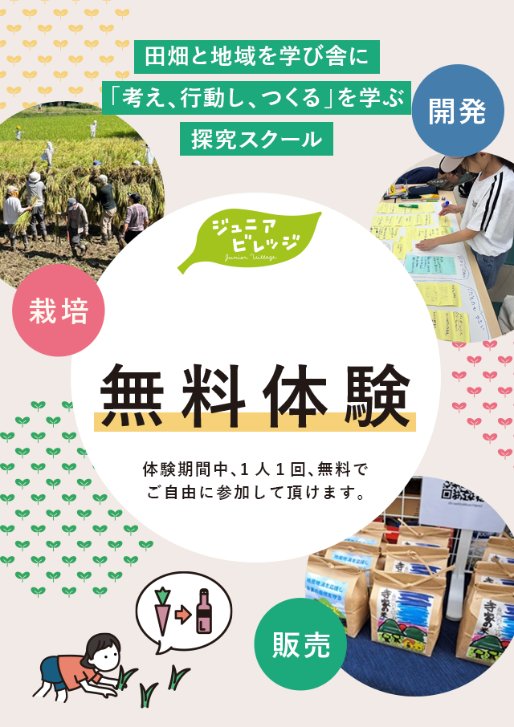
寺家ジュニアビレッジ
経営チャレンジコース
about
田畑と地域を学び舎に
「考え、行動し、つくる」を学ぶ
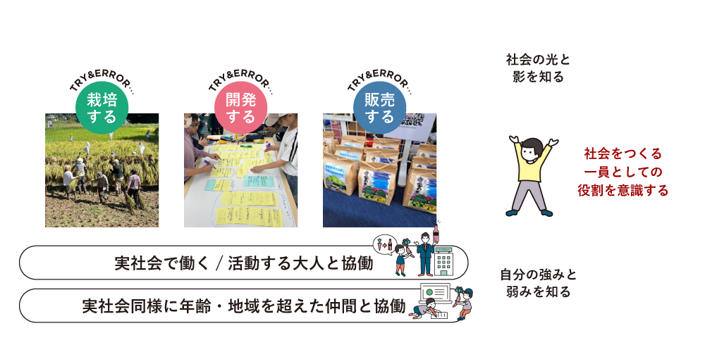
ジュニアビレッジは、実社会をフィールドに小中学生が五感を使った実践を通して
「考え、行動し、つくる」プロセスを大切にする探究スクールです。
失敗や挑戦を重ね、多様な人と関わる経験を通して、
子どもたちは少しずつ「自分らしさ」の土台を育て、
自分のものさし（自分で考え、判断し、行動する力）を育みます。
1年間の主な活動
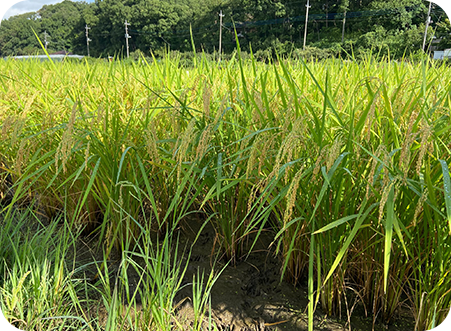
食の課題を知り
農作物を栽培
米の大切さや米づくりを知る
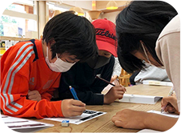
役割を意識した
チーム活動
協調性とリーダーシップを育む
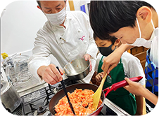
市場調査を行い
特産品開発
創造性や考える力を育む
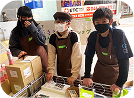
商品販売の実践経験
コミュニケーションを育む
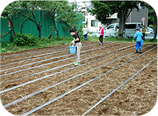
農作業を通じた
自然との継続的な関わり
土が生命を育む循環を知る
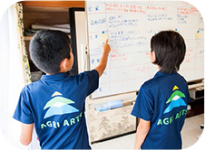
活動報告や
コンテストで発表
人前で発表、プレゼン力を育む
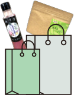
プログラムの特徴
リアルな社会とつながり
自分の軸をもって生きるためのタネをまく
ジュニアビレッジのプログラム
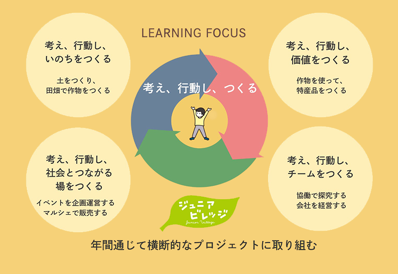
田んぼと森がつながる、
谷戸の里山で学ぶ
1
寺家の魅力は田んぼと森が一体になった谷戸の里山環境です。森を手入れすることは田んぼを守り、里山の景観や生態系を未来につなげていく。そんな自然のつながりを実体験から学びます。
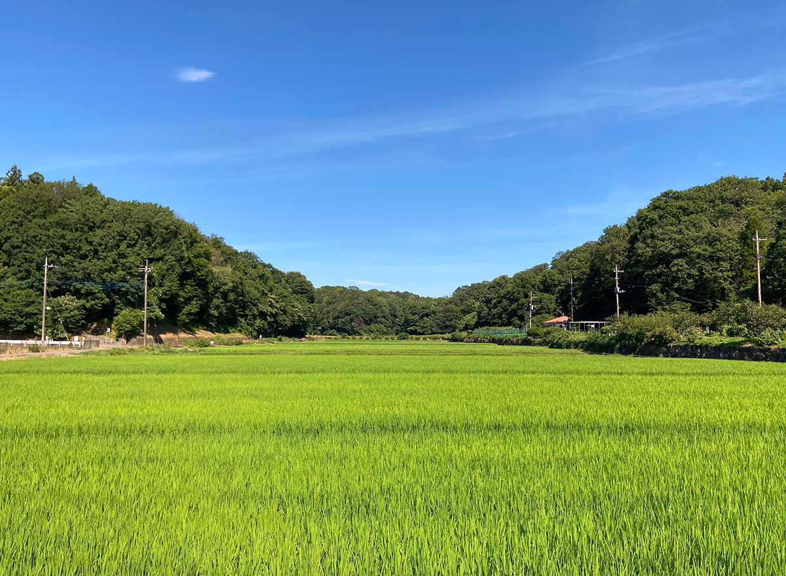
寺家の里山保全に関わる
地域の大人と活動する
2
寺家では、里山を守る地域活動をする方々とも一緒に活動する機会を設けます。森の手入れや環境保全を通して、自然と人の関わり、地域の知恵や想いに触れます。世代を超えた交流が学びを深めます。
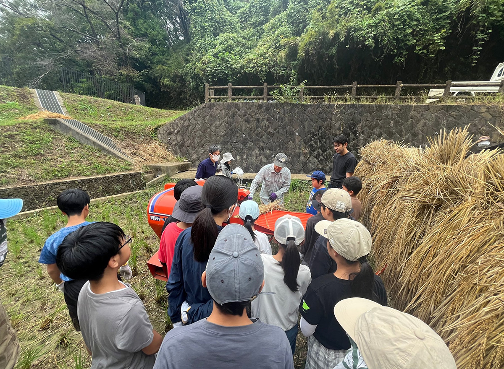
正解のない問いに
向き合う探究
3
「どうしたら森と田んぼを守れる？」「なぜ荒れてしまう？」すぐに答えの出ない問いに向き合い、考え、話し合い、試してみる。自然や社会を“自分ごと”として捉える力を育てます。
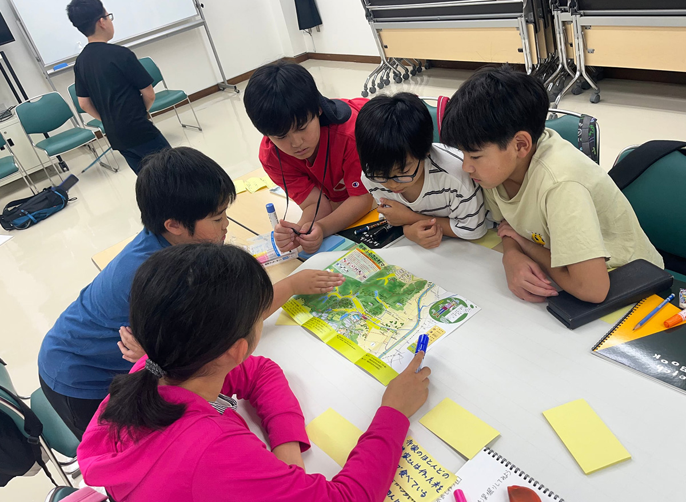
考え、行動し、つくるを
繰り返す実践
4
知るだけで終わらせず、実際に森を手入れし、田んぼに関わり形にしてみる。うまくいかなければやり直す経験を通して学びを深めていきます。
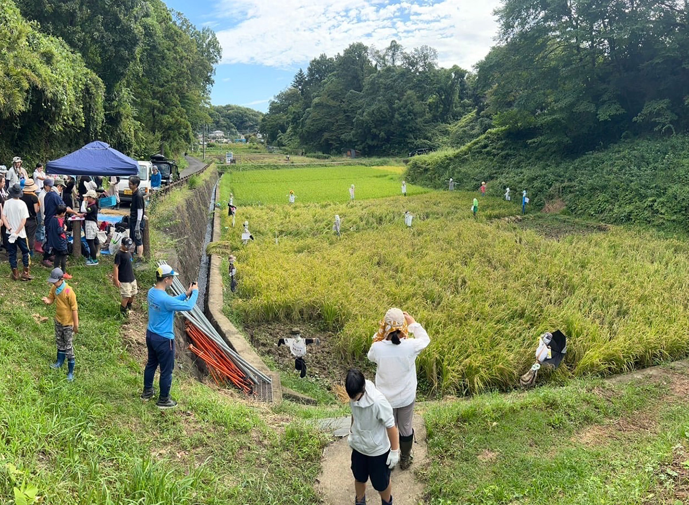
社会とつながり、
里山の価値を伝える
5
育てて終わり、守って終わりではありません。活動を通して感じたことや学びを商品づくりや発信、販売などを通して社会へ届けます。自分たちの行動が、誰かにつながる実感を大切にします。寺家ジュニアビレッジでは、自然・人・地域がつながる里山を舞台に、実社会と関わりながら学びを深めていきます。

こんな方におすすめです
AIの社会を生きるお子様に
このような思いをもつ
保護者の皆様
-

学校の教科だけでなく、社会全体の仕組みを学び、広い視野を持ってほしい。
-
自然や資源の大切さを肌で感じ、地球とのつながりを深める経験をさせたい。
-
社会とのつながりを感じながら、自分の役割や貢献を意識できるようになってほしい。
-
失敗や挫折を恐れず、さまざまな経験を通じて心の強さや柔軟さを育んでほしい。
-
年齢やエリアを超えた多様な人々とのつながりを持ち、豊かな人間関係を築いてほしい。
-
デジタルだけではなく、直接対話やリアルなコミュニケーションも大切にしてほしい。
ジュニアビレッジ部員の声


たくさんの仲間と出会い、多くの経験を共にしてきたことで、課題解決・プレゼンテーションなどの面で大きく成長することができた。

農業は初めての体験で種まきや水やり、肥料やりと大変な事を繰り返し繰り返し行った。面倒くさい！と思う時もあったが、それでも野菜達に愛情を注ぐ事によって、夏には大きなキュウリやナスが育った。その時、今までの努力が積もって実ったんだと思った。

ジュニアビレッジの活動をやってみて、「こうやって世の中が回っているんだな」「誰もこうしなかったら世の中は…」ということや、「なるほど! そうしたら利益を上げられそう!」ということを感じた。
保護者の声
ジュニアビレッジの活動は、娘にとって、挑戦したことのない挑戦の連続で自信につながっていると思います。そのせいか、娘が自分で判断して行動する場面が増えたと感じています。大きな学びだと思います。


農業や販売の経験ももちろんですが、親ではない大人や、元からの友達ではない子ども達との協力や関わりにおいて、自分がどの様な存在になれるのか、なりたいのか、役に立つのか、など考える事ができたと思いますし、人の意見を聞き、皆で考える、行動する、という事に意識を持てたなら、成長になったのだと思います。

いろいろな学年・エリアを超えた人たちと交流ができ、学級活動とはちがう、おもしろさを感じていた様子。

結果は抜きに、まずやってみようという気持ちが大きくなったように感じられる。

考えているだけでなく、行動して、他者に働きかけていくことができるということを、体験を通して知ることができた。

無料体験までの流れ
STEP1
お申し込みフォームを入力
お申し込みフォームに必要事項を入力、送信して無料体験に申し込む。
※お申し込み受付後、自動返信メールが届きます。
STEP2
体験日程の確定
※後日、当日の体験概要、持ち物や服装、集合場所
など体験参加にあたってのご連絡をいたします。
ご不明点、お子様の様子についてのご不安など
ございましたら、お気軽にお問い合わせください。
STEP3
ジュニアビレッジに体験参加
※他の子ども達と一緒に活動にご参加下さい。
無料体験に申し込む
ジュニアビレッジでは活動日にあわせ、毎回無料体験の申し込みを受け付けております。
体験申込は「活動カレンダー」で活動日をご確認いただき、下記のフォームに必要事項をご入力の上、お申し込みください。
活動カレンダー
ジュニアビレッジへの無料体験は、下記フォームに必要事項をご入力の上お申し込みください。
※お申込みの前に、メンバー規約と個人情報保護方針をご確認ください。
概要
開催場所
青葉区寺家町「寺家ふるさと村四季の家」
横浜市青葉区寺家町「寺家ふるさと村」内田んぼ
東急バス「鴨志田団地」バス停・「四季の家」より徒歩1分
寺家ふるさと村四季の家/横浜市青葉区寺家町414
対象年齢
小学4年生から中学3年生まで
活動期間・日時
日曜日 9:00-12:00
4/12、4/19、5/6(祝・火）5/17、5/31、6/7、6/21、6/28、7/5、7/19、7/26
8/2、8/23、9/6、9/20、9/27、10/11、11/8、11/15、11/22、11/23(祝）、12/6、12/20
2027年1/17、1/24、2/14、2/28、3/6(土）、3/14、3/21
※活動内容によって時間を変更する場合があります。
販売会は都筑区で活動する横浜ジュニアビレッジ根っこ塾と一緒に
出店し、販売する予定です。
2025年は下記に出店参加しました。
11月23日 あおばを食べる収穫祭＠藤が丘
12月7日 みなきたマルシェ＆クリスマスマーケット＠センター北
※3/21は全国各拠点と合同の事業報告会で、終日活動を予定しています。
詳しくはWEBサイトでご確認ください。
4月-5月体験日：4/12、4/19、5/6(祝・火)5/17、5/31、9:00-12:00
【体験期間の主な活動内容】
4/12:寺家ふるさと村フィールドワーク＆室内活動
4/19:寺家ふるさと村フィールドワーク＆寺家の森の仕事のお手伝い
5/6:田植えの準備・種もみ播種（塩水選・温湯消毒）＆室内活動
5/17:田植えの準備・種まき＆寺家の森の仕事のお手伝い
5/31:田植えの準備・しろかきとあぜぬり＆室内活動
※体験予約は先着順です。満員でご予約できない場合もございます。
参加料金
無料体験期間無料（1人1回まで）/入会後参加料金・月謝10,000円
年間活動費 22,000 円(年に一回)
(保険料、ユニフォーム、農業資材など )
※休んだ際の振替や返金はありませんので、ご注意ください。
↓↓横浜ジュニアビレッジ根っこ塾はこちら↓↓
当日の流れ
❶自己紹介
アイスブレイクゲーム
❷農作業
しろかき、あぜぬり、苗づくり、田植え、草取り、
稲刈り、脱穀などの田んぼの活動
❸休憩
❹室内活動
ワークショップ、経営会議、企画会議、役職ごとの仕事など
❺ふりかえりとまとめ
※体験参加日によって、活動内容が変更する場合があります。
詳しくは、ジュニアビレッジコーチにご確認ください。
SNS
友だちになって、
お得なイベント＆活動情報GET
; ?>/src/img/button-line.png)
Q&A
- Q.持ち物で必要なものはありますか?
-
A.筆記用具、帽子、タオル(汗拭き、手拭き用)、水分補給用の飲み物(水筒)、軍手、長靴
ジュニアビレッジの田畑は無農薬で栽培しているので、虫も豊富です。
気になる場合は、6月から10月くらいまでは虫除けもご準備下さい。
- Q.当日の服装は？
-
A.農作業をするので、汚れてもいい服装、長いズボン類やジャージ類でご参加ください。
日除け対策も兼ねてアームカバーやTシャツ類の上に羽織るシャツ類があると便利です。
- Q.当日、子どもだけで参加可能ですか？
- A.可能です。送迎は保護者の方にお願いしております。
- Q.当日、保護者は見学できますか？
- A.可能です。ただし、活動内容によっては見学いただけない場合もございます。
- Q.普通の農業体験とのちがいは何ですか？
-
A.ジュニアビレッジは「考え、行動し、つくる」を学ぶ探究スクールです。目的が一般的な農業体験と異なります。
そのため、ジュニアビレッジでは、子ども達が自分で考え、判断し、多様な仲間と協働する経験を積み重ねられるよう
子どもが主役の会社を経営します。
農作物を作るだけに留まらず、フードロスを削減し、新たな価値をつくるため、農作物を活用した商品を開発し、
流通させる実学に重きを置いています。